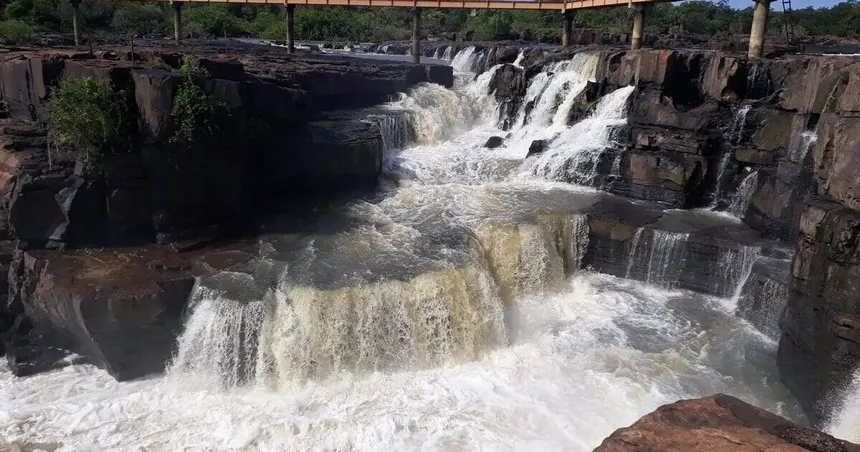
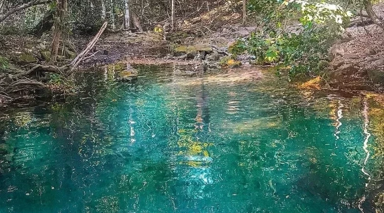
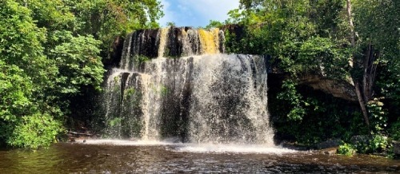
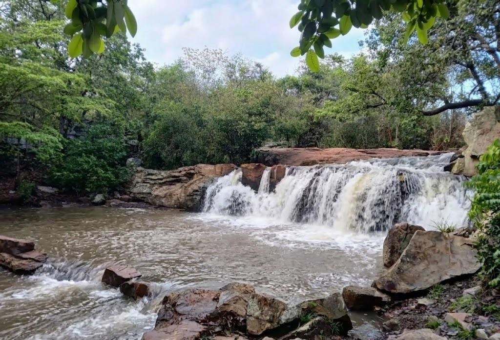
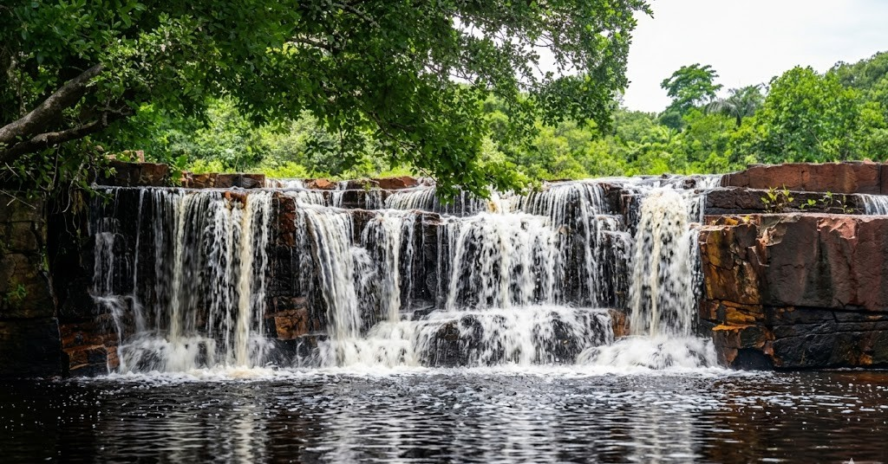

Bem vindo ao DesbraVapp Online
Locais

A Cachoeira do Urubu fica na divisa de Batalha e Esperantina, formada pelas águas do Rio Longá com cascatas de até 12 metros, sendo a mais famosa do Piauí. O nome vem da piracema, quando peixes que sobem as corredeiras viram presa fácil para os urubus. A melhor época para visitar é de janeiro a julho. Nos primeiros meses a paisagem é exuberante, e de maio a julho o banho é mais seguro. O acesso por Batalha é fácil, via BR-222, com cerca de 9 km de estrada asfaltada até o parque.
Ver no Google Maps
A Pedra Branca é um refúgio natural em Batalha, com piscina natural de águas cristalinas cercada por formações rochosas e vegetação nativa, que chama atenção pela transparência da água e clima de sossego. O espaço é frequentado especialmente nos fins de semana para banhos, piqueniques e churrascos com amigos e família.
Ver no Google Maps
A Cachoeira do Xixá fica a apenas 9 km do centro de Batalha, no povoado de mesmo nome, com paredões de pedras de 10 metros que formam quedas d'água e uma bela piscina natural. O nome vem de uma planta nativa do cerrado piauiense de flores avermelhadas. Eleita uma das 7 Maravilhas do Piauí, conta com estacionamento, restaurante e banheiros. A entrada é gratuita e a melhor época para visitar é de fevereiro a maio, quando o volume d'água está no auge.
Ver no Google Maps
A Cachoeira do Canta Galo é uma das principais atrações turísticas de Batalha, localizada no povoado de mesmo nome. A cachoeira é composta por várias quedas d'água e uma piscina natural com águas cristalinas, ideal para banhos e lazer. O acesso é feito por estrada de terra, com cerca de 15 km de distância do centro da cidade.
Ver no Google Maps
A Cachoeira dos Almeidas fica a apenas 300 metros da Cachoeira do Xixá, em Batalha, tornando as duas um passeio natural combinado. Diferente das outras cachoeiras da região, não possui quedas d'água altas, mas conta com cascatas acessíveis e refrescantes tanto para crianças quanto para adultos. Trata-se de uma propriedade privada transformada pelos donos em espaço de lazer, com boa estrutura de atendimento, restaurante com pratos típicos como galinhada caipira e peixada de surubim do Rio Longá. Possui piscina natural, bar e restaurante à beira do riacho, e o acesso é gratuito mesmo sendo área privada. Ideal para um passeio tranquilo em família.
Ver no Google Maps